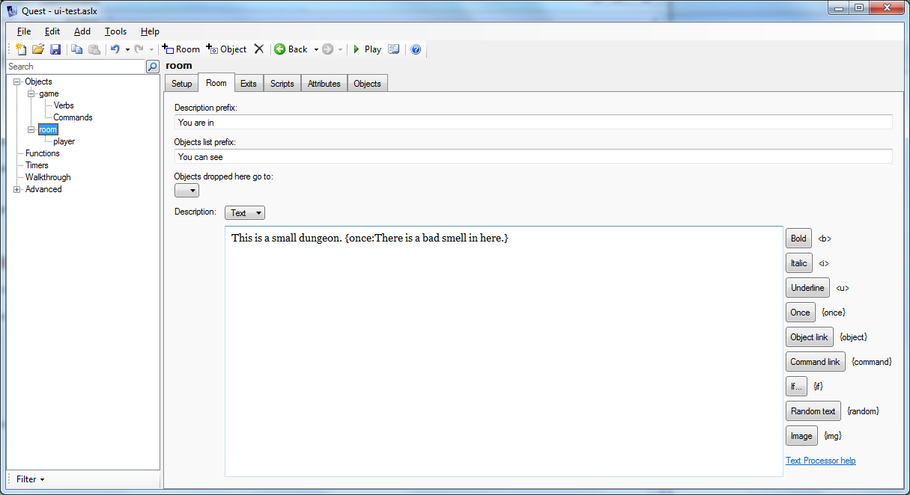

Text processor
Quest 5.4 introduces a text processor, giving an easy way to conditionally print text, show object links, show text only once, and more.
To use the text processor, you can simply add a command in curly braces in any text that gets displayed. In this simple example, a room description is set to say that room smells only the first time the text is printed:

The more important text areas have shortcut buttons for some text processor commands; these are the buttons on the right in the image above. However, you can use text processor commands in any text, for example, in an msg command:
msg ("Would you like some {command:help}?")
You can use as many sections as you like within the same text, and even nest them:
msg ("You can {command:go to shop:go into the shop}. {if player.coins>10:You have {player.coins} coins, which is more than enough.}")
Note that the text processor does not support the use of “this” (if that means nothing to you, then you do not need to worry about it).
Supported processor commands are:
Text adventure mode and Gamebook mode
{once:text}
Displays the text only once. The text will not be printed on subsequent occasions.
{notfirst:text}
Does not displays the text the first time it is printed; the text will only be printed on subsequent occasions.
{random:text 1:text 2:text 3}
Choose text at random (you can have as many sections as you like). This is a great way to add some movement to a character.
You can see Mary {random:paddling in the sea:building a sand castle:running in the sand}.
{img:filename.png}
Insert the specified image.
{object.attribute}
Displays the value of an object’s attribute. A great example of this is where the player can set the name of the main character, you can use {player.alias} as a stand-in for the character’s name.
'Hi, {player.alias},' says Mary, 'I've not seen you in a while!'
{if object.attribute:text}
Display text only if object attribute is true (so requires a flag, otherwise known as a Boolean attribute). Containers have a flag called “isopen”, and you could use that to modify the description, for instance.
The chest is old, and almost falling apart. {if chest.isopen:The lid is open.}
{if not object.attribute:text}
Display text only if object attribute is false.
{if object.attribute=value:text}
Display text only if an object attribute equals a certain value.
{if object.attribute<>value:text}
Display text only if an object attribute does not equal a certain value.
{if object.attribute>value:text}
Display text only if an object attribute is greater than a certain value.
{if object.attribute>=value:text}
Display text only if an object attribute is greater than or equal to a certain value.
{if object.attribute<value:text}
Display text only if an object attribute is less than a certain value.
{if object.attribute<=value:text}
Display text only if an object attribute is less than or equal to a certain value.
{command:command}
Displays a link that will run a command, displaying the command itself as the text. The command will be parsed as normal, so could be as simple as {command:HELP} or as complicated as {command:put the ball in the chest}. For a gamebook, the command should be the name of a page.
{command:command:text}
Displays a link that will run a command, as before, but displaying some different text.
{page:command}
As command (an alternative name that may be prefered for game books).
{page:command:text}
As command (an alternative name that may be prefered for game books).
Additional text adventure commands
{object:name}
Displays an object hyperlink, using the object’s display alias.
{object:name:link text}
Displays an object hyperlink, using text you specify.
{exit:name}
Displays an exit hyperlink. The name is the name you give to the exit (by default exits do not have names; you will need to give it a name yourself). The link will appear as the exit’s alias (“north”, “up”, etc.)
{rndalt:object}
Display a randomly chosen name from an object’s alt list.
{if attribute:text}
Display text only if game attribute is true
{if not attribute:text}
Display text only if game attribute is false
{select:object.attribute:text 0:text 1:text 2}
{select:object.attribute:text 0|text 1|text 2}
Selects one text to display, based on the value of the object attribute (you can have as many sections as you like). Note that the attribute must be an integer (whole number), and the sections number from zero. The second form, with texts separated by vertical bars, allows additional text processor directives to be nested inside the select directive. This is new to Quest 5.7.
Additional text adventure commands in Quest 5.7
{i:text} Displays the given text in italic.
{b:text} Displays the given text in bold. To do bold and italic, nest the commands, like this: {b:{i:very important}}.
{u:text} Displays the given text in underline.
{s:text} Displays the given text in strike-through.
{colour:colour:text} Displays the given text in the colour specified (you can also used “color”, by the way).
{back:colour:text} Displays the given text with the colour specified as the background. To show text as white on black, you can combine these like this: {colour:white:{back:black:some highlighted text}}.
{here object:text} Displays the text only if the given object is in the current room (but not if in the player’s inventory or in a container in the room).
The beach is long, and the sand almost white. {here mary:You can see Mary, building a sand castle.}
{nothere object:text} Displays the text only if the given object is NOT in the current room.
The beach is long, and the sand almost white. {nothere mary:You wonder where Mary could be.}
{popup:text:long text} Displays a link, with the first text (which cannot have text processor directives nested in it). When the player clicks on the link, a pop-up will be displayed, containing the long text. The pop-up will disappear when the long text is clicked on. This can be used with the img command to have an image pop-up.
{either condition:text} This works similar to the if command above, but with two important differences. The first is the the condition can be any Quest code that results in a Boolean (true or false). The second is that if you are comparing a string it needs to be in double quotes (as is true of normal Quest code).
{either condition:text|text} As before, but the second text is only seen when the condition fails. Note that the two texts are separated by a vertical bar, to ensure nesting works properly.
"You {either StartsWith(player.name, \"play\") and not player.flag:are the player}"
-> "You are the player",
"'Oh, {either player.male**flag:he|she} is not worth it.'"
-> "'Oh, he is not worth it.'",
{eval:code} The code is evaluated, just as normal Quest code is, and the result displayed.
{=code} This is a short cut for eval, and works just the same. The samples below show the potential, though by its nature this is rather less forgiving that the other commands available.
"You are in the {eval:player.parent.name}"
-> "You are in the kitchen"
"You are in the {=player.parent.name}"
-> "You are in the kitchen"
"You are in the {=CapFirst(player.parent.name)}"
-> "You are in the Kitchen"
"There are {=ListCount(AllObjects())} objects"
-> "There are 6 objects"
"You look out the window: {=LookOutWindow}"
-> "You look out the window: A figure is moving by the bushes"
Additional gamebook commands
{counter:countername}
Displays the value of an counter
{if flag:text}
Display text only if flag is set
{if not flag:text}
Display text only if flag is not set
{if countername=value:text}
Display text only if a counter equals a certain value.
{if countername>value:text}
Display text only if a counter is greater than a certain value.
{if countername>=value:text}
Display text only if a counter is greater than or equal to a certain value.
{if countername<value:text}
Display text only if a counter is less than a certain value.
{if countername<=value:text}
Display text only if a counter is less than or equal to a certain value.
Curly braces
Should you want to use curly braces to actually display curly braces, Quest will usually work out that that is what you want. As of Quest 5.7, if you find it is trying to display it as a text processor command (or is throwing an error because it has failed to), you can use @@@open@@@ and @@@close@@@ to tell Quest to display curly braces.
```
“player.count = @@@open@@@player.count@@@close@@@”
-> “player.count = {player.count}”